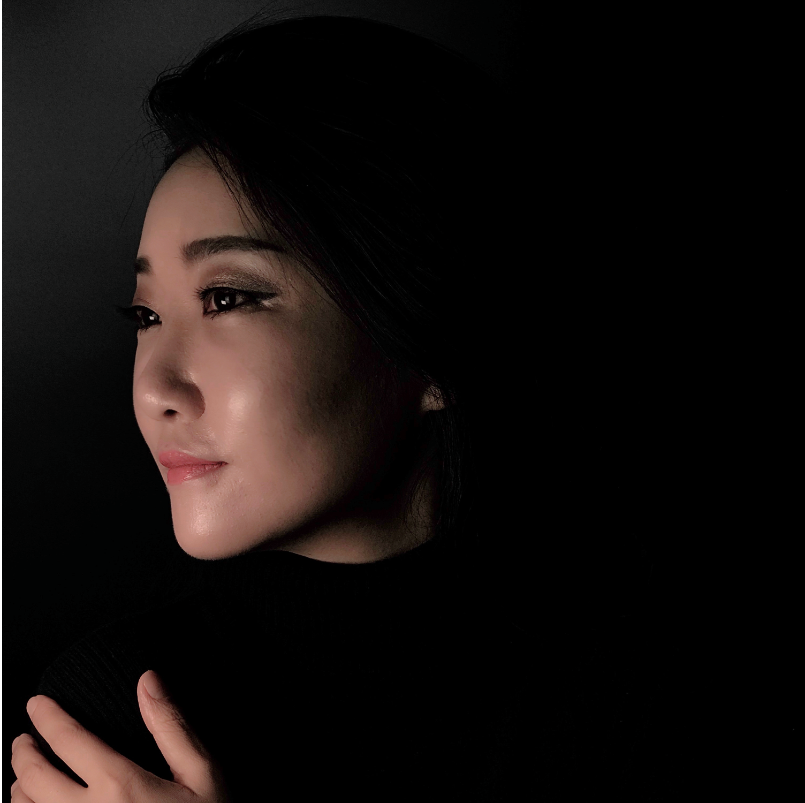
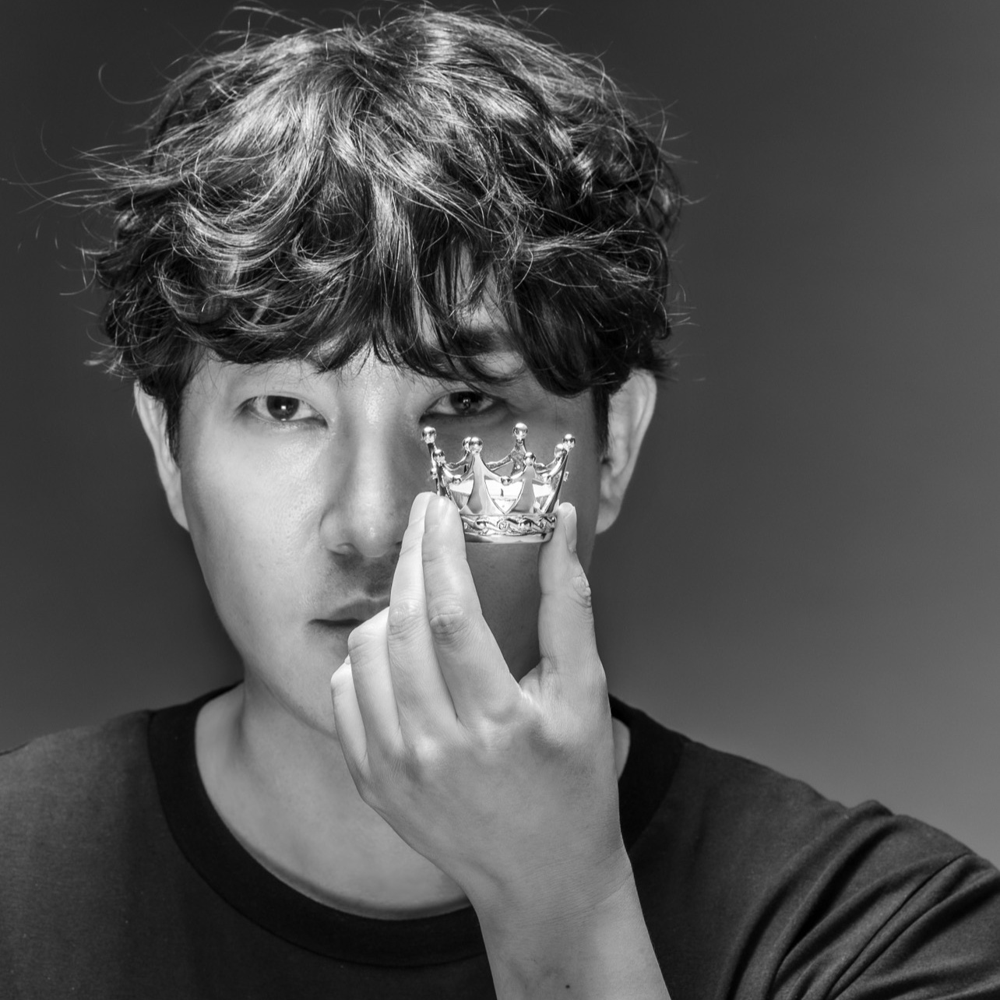
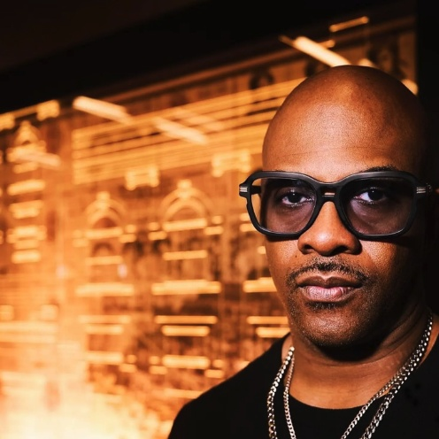
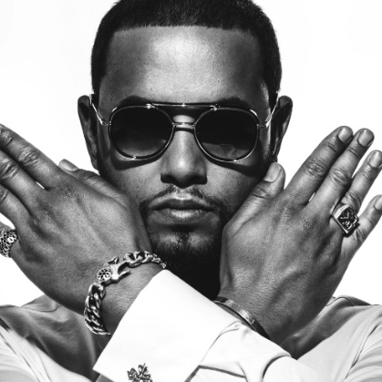
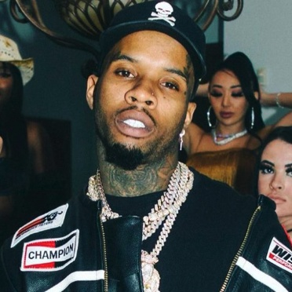
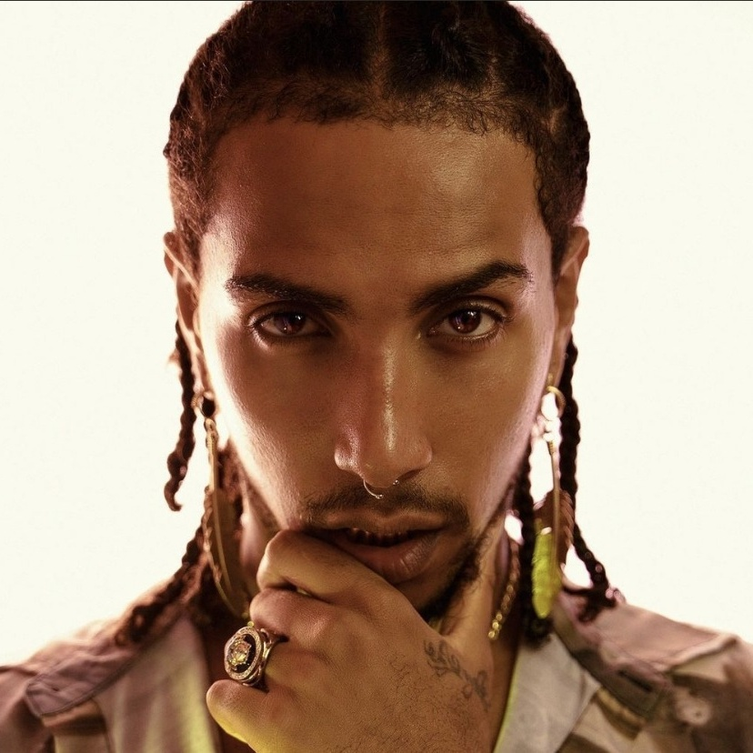

Sung Hie Ahn은 현대음악 작곡가이자 국립강원대학교 음악학과 교수다. 음악, 영상, 공간, 기술을 융합한 작품을 통해 동시대 예술의 새로운 표현 방식을 탐구하고 있다.
KBS Classic FM 진행자를 역임했으며, 공연예술, 미디어아트, 예술영화 등 다양한 분야에서 창작 활동을 이어왔다. 2021년 예술영화 〈DAL, HAE.EYE〉는 World Film Carnival 환경 부문 수상작으로 선정되었다.
현재 ARAKOREA.ORG 대표이사로서 문화예술, 국가 브랜드, 지속가능성(SDGs)을 주제로 한 국제 프로젝트를 기획하고 있다.

Angel Hong은 글로벌 콘텐츠와 브랜드 전략을 기획하는 크리에이티브 디렉터이자 프로듀서다.
헐리우드 드라마와 영화 제작 환경에서 활동했으며, GE 산하 GEP Productions에서 제작 경험을 쌓았다. 이를 바탕으로 북미 콘텐츠 제작 시스템과 글로벌 미디어 비즈니스에 대한 실무 역량을 구축했다.
2014년 TIKOONZ를 설립한 이후 브랜드와 미디어 사업을 확장했으며, 현재 AK ENM과 ARAKOREAGROUP.COM을 기반으로 글로벌 콘텐츠와 문화 프로젝트를 총괄하고 있다.

Maestro Fresh Wes는 캐나다 힙합의 기원이자 토론토 힙합 씬의 정신적 중심으로 평가받는 인물이다. 그는 Drake와 Kardinal Offishall이 성장하던 시기에 직접 랩과 음악적 태도를 전수한 ‘갓파더’로, 토론토 힙합이 미국 메인스트림 시장으로 진입하기 전 세대적 토대를 구축했다.
Drake는 이후 글로벌 팝·힙합 시장의 구조를 재편한 슈퍼스타로 성장했고, Kardinal Offishall 역시 캐나다와 미국 메인스트림을 연결한 핵심 아티스트로 자리 잡았다. Maestro Fresh Wes는 이 모든 흐름의 출발점에 위치한 인물이다.

Director X는 토론토 출신의 세계적 뮤직비디오·영화 감독으로, 동시대 대중음악의 시각적 언어를 구축해 온 핵심 인물이다.
그는 Kendrick Lamar, Jay-Z, Kanye West, Rihanna, Usher 등과의 작업을 통해 뮤직비디오를 단순한 홍보 영상이 아닌, 음악·패션·도시 문화가 결합된 글로벌 메인스트림의 표준으로 끌어올렸다. 특히 Kendrick Lamar와의 작업은 그의 연출 언어가 현재진행형으로 작동하고 있음을 보여준다.

Tory Lanez는 현재진행형으로 글로벌 메인스트림에서 활동하고 있는 토론토 출신 아티스트다. 그는 Chris Brown, Meek Mill, Lil Wayne, DaBaby, Tyga 등과의 협업을 통해 동시대 힙합과 R&B 씬의 중심부에서 영향력을 유지해 왔다.
음악, 퍼포먼스, 프로덕션을 동시에 수행하는 멀티 플레이어로서 지금 이 순간에도 메인스트림의 흐름 안에서 활발히 활동하고 있다.

Laioung은 유럽 랩 씬을 기반으로 활동하며 미국 메인스트림과도 직접 연결된 글로벌 아티스트다. Young Thug이 피처링으로 참여한 곡이 존재할 만큼 국제 협업의 실체가 분명한 인물이다.
아래 영상은 AK ENM이 제작·운영한 TIKOONZ VIDEO이며, Laioung은 tikoonz.tv에 공개된 모든 영상의 음악을 작곡했다. 그는 TIKOONZ의 음악적 정체성을 전담한 핵심 작곡가다.